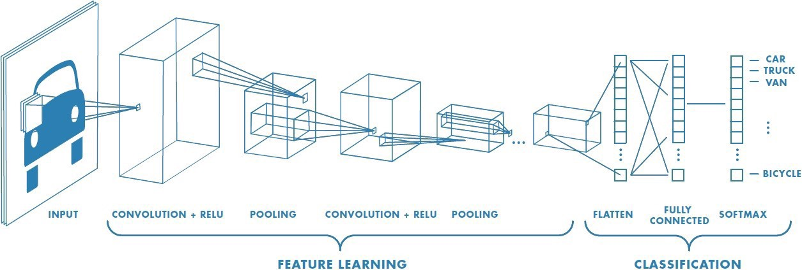

Car Brand Logo Classification
Deep learning has been gaining momentum over last decades: self-driving cars, efficient web search, speech and image recognition, video processing. The successful results gradually propagate into our daily live. Deep learning is a class of artificial intelligence methods, which allows the computer to operate in a self-learning mode, without being explicitly programmed. It is a very interesting and complex topic, which could drive the future of technology.
Convolutional Neural Networks
Convolutional Neural Networks (ConvNets or CNNs) are a category of Neural Networks that have proven very effective in areas such as image recognition and classification. ConvNets have been successful in identifying faces, objects and traffic signs apart from powering vision in robots and self driving cars.
The main task of image classification is acceptance of the input image and the following definition of its class.This is what people learn from their birth.But the computer sees the pictures quite differently:

CNN Architecture

A Convolutional Neural Network (CNN) is comprised of one or more convolutional layers (often with a subsampling step) and then followed by one or more fully connected layers as in a standard multilayer neural network. The architecture of a CNN is designed to take advantage of the 2D structure of an input image.